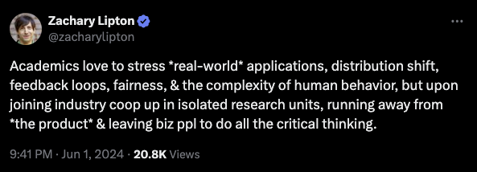

Lessons From Six Years of Applied Machine Learning in Industry
It’s been more than six years since I started working in industry doing Machine Learning. I wanted to delve a bit deeper into my experience and what I have seen as differences between academic research (PhD) and applied research/data science. Below, I describe six lessons I have learned.
1. I don’t have the time to do all the experiments I would like.
When trying to get your research published, there are many experiments you need to perform. Experiments become nice plots and tables. You cannot have missing cells in your tables, and you cannot have missing curves in your plots. You need to be thorough and complete. That’s good for science and rigorous peer-review evaluation.
In industry, especially if you want to move quickly, you cannot do all those experiments. It is OK to stop your experiments before having all the cells in the table. It is OK if you don’t have all the points in your curve.
The first reason to not need a complete evaluation is that the experiment has failed. It is clear that your hypothesis/idea did not work. You will be wasting time waiting for another seed/experiment/curve.
There is also a second moment where I sometimes would like to keep doing experiments: the results are good, they are better than the baseline, my manager/team is convinced this is a step forward. But there are still more ideas to try and more improvements possible.
And let me tell you something, particularly young people here. Better is good. I used to have to tell my young staff this all time in the White House. Better is good. That’s the history of progress in this country — not perfect, better – Barack Obama.
The second reason to stop experiments might be because your work is good enough to go into production. Research stops for now (it will come back, don’t worry).
2. I do exploration/exploitation experiments.
When doing academic research, you are usually part of a very small circle of expertise and you have a reasonably defined project. Your goal is to advance the state of the art, which limits your degrees of freedom on the things you can try.
When dealing with an industry problem, the tool/algorithm you use is completely irrelevant for MANY people (even your manager), as long as you solve it. That’s your job, solving a problem, not advancing the state of the art. Now I see it as an advantage, but it can also be daunting. What to try? Where to start?
There are problems in industry that are too complex to solve entirely. There are problems where there is no baseline to start with. There are problems where improvements can be made in 10 different parts of the process. This is where I try diverse ideas/experiments with sufficient diligence (exploration experiments). Maybe putting together an ensemble of classifiers instead of the one we are using might improve the performance, or maybe trying a completely new classifier, or different features. The point is to have diversity and see where most of the gains could be made. Once an area of improvement is identified, experiments shift to an exploitation phase, delving deeper into details.
3. I need to take many decisions on my own.
If you accept that perfection can’t be reached, and that everything you add has the risk of making things worse, then you can start making tradeoffs. It’s easy, if you have a problem, to think of the solution in isolation—to work as though you have infinite time and energy for that one solution. But you exist in the physical world, where there are constraints.1
There are many decisions to make and there are always tradeoffs. I need to decide which hyperparameters to test, how to preprocess data, which baselines to try, etc. In most cases, I make brief assessment and analyze the tradeoffs. Usually time is one salient factor to consider. High-stakes decisions (one-way doors) need more analysis and usually more people involved.
“Some decisions are consequential and irreversible or nearly irreversible – one-way doors – and these decisions must be made methodically, carefully, slowly, with great deliberation and consultation. If you walk through and don’t like what you see on the other side, you can’t get back to where you were before. We can call these Type 1 decisions. But most decisions aren’t like that – they are changeable, reversible – they’re two-way doors. If you’ve made a suboptimal Type 2 decision, you don’t have to live with the consequences for that long. You can reopen the door and go back through. Type 2 decisions can and should be made quickly by high judgment individuals or small groups”2
4. I care much more about the data instead of just the model.
In academic research, models are what matter. In industry, models are important, but everything before the models is usually much more important. Data is what matters. Understanding your data means understanding your problem and understanding your problem might provide clues on how to better approach it.
Looking at the data, spending time before trying the first baseline is particularly important.
The first step to training a neural net is to not touch any neural net code at all and instead begin by thoroughly inspecting your data. This step is critical. I like to spend copious amount of time (measured in units of hours) scanning through thousands of examples, understanding their distribution and looking for patterns. Luckily, your brain is pretty good at this. One time I discovered that the data contained duplicate examples. Another time I found corrupted images/labels. I look for data imbalances and biases. I will typically also pay attention to my own process for classifying the data, which hints at the kinds of architectures we’ll eventually explore. As an example - are very local features enough or do we need global context? How much variation is there and what form does it take? What variation is spurious and could be preprocessed out? Does spatial position matter or do we want to average pool it out? How much does detail matter and how far could we afford to downsample the images? How noisy are the labels?3
Cleaning and learning from your data can be one of the most impactful things you can do for your result. After doing this on different occasions, I’ve discovered it’s actually not as boring as it may seem. The lack of proper motivation might be the issue; in industry, the data is noisy, complex, entangled, and usually unstructured. This is “real” data, and it presents a worthwhile challenge.
5. I have to switch priorities quickly.
If you work as an “Applied Scientist” then inherently there’s a connotation of going beyond academic papers. It means you have a tighter integration with the entire business, which means you are using company data and models. It is probable that you are part of a cross-functional team, meaning you interact with more people.
Similar to data scientists, applied scientists convert business problems (e.g., increasing revenue) into solutions (e.g., increased customer acquisition? improved search or recommendations? pricing models?) To go from problem to production, they need know-how on: building data pipelines, experimentation and prototyping, training and deploying ML models, and basic software engineering and devops. Their deliverables include code for ML systems and documents on their design, methodology, and experiments.4
Having this broader spectrum of reachability has a consequence that there’s a range of responsibilities that have changing priorities. When you are responsible for something in production and something is not working, that takes priority. Other times, pure research has the top priority. I’ve noticed that having proper documentation helps with this context switching, even when you are the only person working on that part of project.
6. I can see the impact of my work.
Academic research often means publishing in conferences and journals. However, in ML, the usefulness and applicability of the research are often relegated to a single paragraph in the Introduction of the paper. Generally, the experiments are conducted in smaller, controlled settings rather than in real-world environments. While there are valid reasons for this approach, it is evident that many papers do not have immediate industry applications. In practice, a published paper usually marks the end of that particular piece of research.

Papers typically motivate their projects by appealing to the needs of the ML research community and rarely mention potential societal benefits.5
Even when societal needs are mentioned as part of the justification of the project, the connection is loose.5
The cursory nature of the connection between societal needs and the content of the paper also manifests in the fact that the societal needs, or the applicability to the real world, is often only discussed in the beginning of the papers. From papers that mention applicability to the real world, the vast majority of mentions are in the Introduction section, and applicability is rarely engaged with afterwards. Papers tend to introduce the problem as useful for applications in object detection or text classification, for example, but rarely justify why an application is worth contributing to, or revisit how they particularly contribute to an application as their result.5
Working in industry usually means your work is not going to get published, which might mean losing that proud moment of going to conferences and presenting your work. However, when you successfully deploy something into production, you receive a different type of personal recognition: you can confidently say to yourself, “That thing is running live, and I built it.”
-
Justin Deal, “There’s no such thing as perfection—only tradeoffs” ↩︎
-
Dan, Ziyou, “Applied / Research Scientist, ML Engineer: What’s the Difference?" ↩︎
-
Birhane, Abeba, et al. “The values encoded in machine learning research.” Proceedings of the 2022 ACM Conference on Fairness, Accountability, and Transparency. 2022. ↩︎